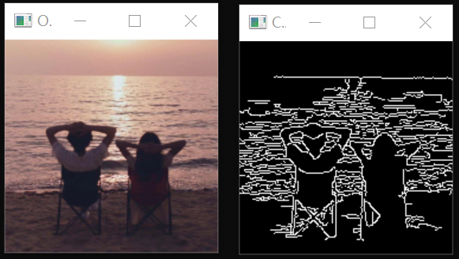
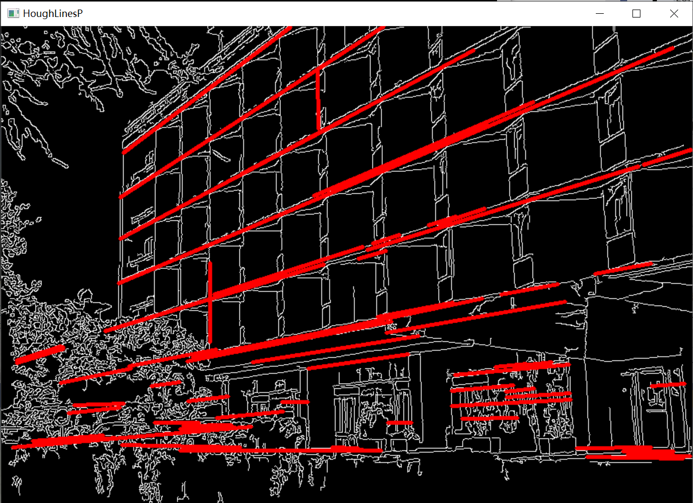

前段时间毕设在研究Android开发，以及对第三方库的JNI编程和交叉编译，本想把FFmpeg和JNI先整理成博客发出来，奈何实在太懒了，可能还要过一段时间才能整理完了。正好这几天项目里用到了OpenCV里Detection的一些算法，就去学习了一下。
[OpenCV]Canny边缘检测、HoughLinesP直线检测
边缘检测Edge detection
边缘检测算法是指利用灰度值的不连续性质，以灰度突变为基础分割出目标区域。大概原理是计算图像中每个像素点的梯度值和梯度方向。使用边缘检测算子计算图像在x和y方向上的一阶导数，然后计算每个像素点的梯度幅值和梯度方向；再利用NMS和阈值检测将边缘点标记和连接。
最后的输出一定是一个二值图像，其中白色像素表示边缘，黑色像素表示非边缘。
Canny边缘检测算法的优点是能够检测到比较细的边缘，且对噪声比较鲁棒。
1
2
3
4
5
6
7
| Canny算法参数：
InputArray image, //输入图像，要求为灰度图
OutputArray edges, //canny检测后的输出图像
double threshold1, //阈值1,低阈值
double threshold2, //阈值2，高阈值，低/高=比值1:2~1:3尤佳
int apertureSize = 3, //Sobel算子的孔径大小
bool L2gradient = false //计算梯度幅度值的标识，默认为false
|
实验代码，参数可以自行调整。
1
2
3
4
5
6
7
8
9
10
11
12
13
14
| #include<opencv2/opencv.hpp>
#include <opencv2/imgproc.hpp>
#include <opencv2/highgui.hpp>
using namespace cv;
int main() {
Mat src, dst;
src = imread("../../pictureRepo/people.jpg");
Canny(src, dst, 50, 200, 3);
namedWindow("Orgin", 1);
imshow("Orgin", src);
namedWindow("Canny", 1);
imshow("Canny", dst);
waitKey(0);
}
|
网上随便找了一张图，实验结果是这样的。值得注意的是：Canny算法的output是二值图像，其中白色像素表示边缘，黑色像素表示非边缘。

直线检测Line detection
霍夫变换直线检测是最基本的算法，也是今天学习和使用到的。他有HoughLines和HoughLinesP两种，后者是前者的优化，但并不意味着HoughLines完全被取代，他们适用于不同的场景，大家可以根据实际需要自行选择。
需要我们注意的是霍夫直线检测是从二值图像中检测直线(线段)，所以在调用HoughLines或HoughLinesP算法前，要先将图像转换成二值图像，通常在之前先使用Canny将其简化成只有边缘特征的二值图像。
这里我使用了OpenCV官方文档提供的示例代码进行测试。
1
2
3
4
5
6
7
8
| HoughLinesP算法参数：
InputArray image, // 8位的单通道二值图像。对于其他类型，在进行霍夫变换之前，需要将其修改为这个指定的格式
OutputArray lines, // 输出的直线集合
double rho, // 以像素为单位的距离 r 的精度。一般情况下，使用的精度是 1
double theta, // 角度 θ 的精度。一般情况下，使用的精度是 pi/180，表示要搜索可能的角度
int threshold, // 阈值。该值越小，判定出的直线越多；值越大，判定出的直线就越少
double minLineLength = 0, // 控制「接受直线的最小长度」的值，默认值为 0
double maxLineGap = 0 // 控制接受共线线段之间的最小间隔，默认值为 0
|
实验代码，参数可以自行调整。
1
2
3
4
5
6
7
8
9
10
11
12
13
14
15
16
17
18
19
20
21
22
23
24
25
26
| #include <opencv2/imgproc.hpp>
#include <opencv2/highgui.hpp>
using namespace cv;
using namespace std;
int main() {
Mat src, dst, color_dst;
src = imread("../../pictureRepo/building.jpg");
Canny(src, dst, 50, 200, 3);
cvtColor(dst, color_dst, COLOR_GRAY2BGR);
vector<Vec4i> lines;
HoughLinesP(dst, lines, 1, CV_PI / 180, 200, 30, 10);
for (size_t i = 0; i < lines.size(); i++)
{
line(color_dst, Point(lines[i][0], lines[i][1]),
Point(lines[i][2], lines[i][3]), Scalar(0, 0, 255), 3, 8);
}
namedWindow("Orgin", 1);
imshow("Orgin", src);
namedWindow("HoughLinesP", 1);
imshow("HoughLinesP", color_dst);
waitKey(0);
}
|
实验结果如下。
这是一个OpenCV官方文档提供的示例图片:
这是上述程序在概率霍夫变换后的输出：

这是用 HoughLinesP的结果，使用HoughLines进行检测出现比较严重的误判。我猜想的原因是这样的：根据官方文档的描述， HoughLinesP检测出来的是一条条可以控制长短的线段，而 HoughLines只能检测出完整的直线。所以除了一些特殊的情景外，使用 HoughLinesP的检测结果会更精确。